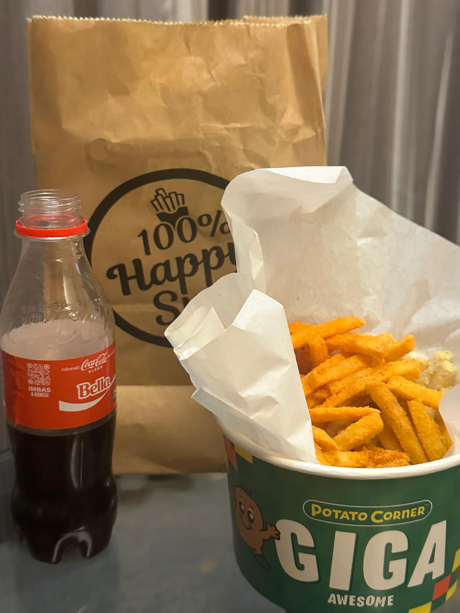
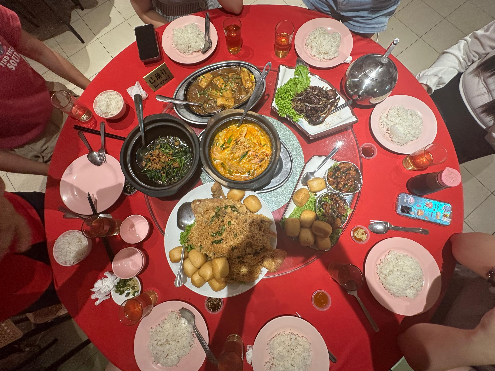

August Healing
August Healing is one of my favorite cafés in Ipoh.
You might miss this inconspicuous café because it’s upstairs.
And there are only small signboards to point the way to the cafe.
August Healing is one of my favorite cafés in Ipoh.
You might miss this inconspicuous café because it’s upstairs.
And there are only small signboards to point the way to the cafe.
Penang is famous for its fried oyster omelette (Oh Chien),
and I am bringing you three legendary stalls that you must try! 🏆
Whether you're a foodie, traveler, or local street food lover,
this video is your ultimate guide to Penang’s best Oh Chien

This is the best Flavoured Fries Potato in Malaysia
With a glass of ice coke,You will have the moment of on cloud nine
Its vegetarian friendly and get Certificate of Halal
Muslims are able to check this out!
Located in Ipoh,KL,Johor, A restaurant of vegetarian.
People who dine in felt chill and comfortable
No weither you are meat lover or vegetarian must try it!
A muslim friendly restaurant with concept of Forest
After ordering your meals,
You are enecouraged to roam at the backyard of the restaurant
To visit their green plants, which is pleasing to the eye.

A local cuisine from GuangXi, China
Some people like it but someone doesnt like it like durian
It had a strong smell and unbearable
Although it is stinky but the taste of the noodles are really good

A Chinese you must try in Ipoh which located in Gunung Rapat
The Curry Seafood Pot is the best curry i had try before
Remember to make a reservation before you go
Since everytime i went it’s full ppl in the house